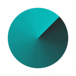
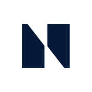
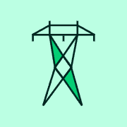

Kven er kven i norsk krypto
Selskap, organisasjonar, styresmakter og personar i offentlege yrkesroller, slik dei er omtalte i nyheitene vi lenkjer til. Kvar oppføring og kvar kopling har lenkje til kjelda. Klikk på eit kort for detaljar og koplingar på tvers av privat og offentleg sektor.
Oversikt: slik heng norsk kryptoregulering og -bransje saman (per 03.10.2026)
Lovgiver: Stortinget vedtar lovene, og kryptoeiendelsloven ble vedtatt i mai 2025. Finanskomiteen behandler finansmarkeds- og skattesaker. Leder er Tuva Moflag (Ap), 1. nestleder Hans Andreas Limi (FrP) og 2. nestleder Bjørn Arild Gram (Sp).
Regelverk/politikk: Finansdepartementet (finansminister Jens Stoltenberg) eier regelverket. Finansmarkedsavdelingen (eksp.sjef Geir Åvitsland) og seksjonen for forsikring og kapitalmarkeder har ansvaret for regulering av kryptoaktiva. AML-regelverket ligger i seksjonen for bank og betaling.
EU/EØS: MiCA (forordning (EU) 2023/1114) og TFR II er tatt inn i EØS-avtalen og gjelder som norsk lov fra 1. juli 2025 (kryptoeiendelsloven). ESMA og EBA lager utfyllende regler (nivå 2 og 3), som Finanstilsynet gjennomfører i kryptoeiendelsforskriften.
Tilsyn og konsesjoner: Finanstilsynet (direktør Per Mathis Kongsrud) gir og nekter CASP-tillatelser, fører tilsyn og kan ilegge overtredelsesgebyr. Ifølge Finanstilsynets register (https://www.finanstilsynet.no/en/finanstilsynets-registry/, hentet 03.10.2026) har seks norske foretak CASP. Fem av dem er tidligere vekslings- og oppbevaringstjenester: Týr Markets (18.05.2026), Firi (22.05.2026), K33 Markets (16.06.2026), Bare Bitcoin (26.06.2026) og NBX (29.06.2026). Den sjette er verdipapirforetaket AK Jensen Norway AS (verdipapirforetakskonsesjon siden 26.02.2021), med CASP-tjenestene mottak og formidling av ordrer og porteføljeforvaltning registrert 02.02.2026.
Skatt: Skatteetaten (skattedirektør Nina Schanke Funnemark) skattlegger kryptogevinst og -formue. Etter CARF/DAC8 skal norske og utenlandske tilbydere rapportere til Skatteetaten fra og med inntektsåret 2026, med første rapportering innen 10.02.2027.
Kriminalitet/AML: Økokrim (sjef Pål K. Lønseth, ifølge Økokrims årsrapport 2025) etterforsker økonomisk kriminalitet og har en egen kryptovalutagruppe. FIU mottar rapporter om mistenkelige transaksjoner, også fra kryptobørser.
Sentralbank: Norges Bank (sentralbanksjef Ida Wolden Bache) konkluderte i des. 2025/mars 2026 med at det ikke er grunnlag for digitale sentralbankpenger nå. Banken fortsetter å teste tokenisering og navnga tolv samarbeidende finansaktører i et LinkedIn-innlegg 07.09.2026.
Utvinning/datasentre: Digitaliserings- og forvaltningsdepartementet (statsråd Torgeir Micaelsen) og Energidepartementet (Terje Aasland) utreder en statlig planbestemmelse med midlertidig forbud mot nye kraftkrevende kryptodatasentre. Den er ikke vedtatt per 18.09.2026, og vedtakene skal svares ut i budsjettproposisjonen for 2027 (https://www.stortinget.no/no/Saker-og-publikasjoner/Sporsmal/Skriftlige-sporsmal-og-svar/Skriftlig-sporsmal/?qnid=127181). Omfanget oppgis med to ulike tall: Nkoms liste (03.10.2026) viser 8 av 60 kommersielle operatører med kryptoutvinning, mens statsrådens svar 18.09.2026 (Dok. 15:3707) oppgir 9 registrerte datasentre med kryptoutvinning. Tallene teller ulike enheter (operatører mot datasentre), og Nkom publiserer ikke virksomhetsinterne datasentre.
Bransjen: Fem tidligere vekslings- og oppbevaringstjenester fikk CASP-tillatelse før MiCA-fristen 01.07.2026. Bitmynt, JuJu og Bitcoin Norway la ned ifølge Shifter. JuJus kundebase ble kjøpt av NBX ifølge NBX' halvårsrapport. Bankene tilbyr ETP-er og satser på tokeniserte innskudd fremfor spot-krypto – DNB ifølge BankShift og Kaupr.
Atterhald
- Finansdepartementet: Det er ikke bekreftet hvilken statssekretær som har finansmarkeds- og kryptoporteføljen.
- Finanstilsynet: Wenche Fagereng er oppført med navn og rolle etter organisasjonskartet. Det sies ikke noe om ansvar for MiCA eller CASP-tilsyn, fordi det ikke er bekreftet i offentlig kilde.
- Tokeniseringsnettverket: Primærkilden er Norges Banks eget LinkedIn-innlegg 07.09.2026. Det er ikke publisert på norges-bank.no.
- ESMA: Carlo Comporti er godkjent av Europaparlamentet som ny chair fra 1.11.2026, men venter på Rådets vedtak.
- Finanskomiteen: Bare leder og nestledere publiseres foreløpig.
Industrikart
Aktørane i organisasjonskartet sorterte etter kategori. Klikk på ein aktør for å opne oppføringa i kartet over. · Slik blir reglane til →
Børsar og meklarar
Lommebøker og forvaring
Ingen kjeldebelagde aktørar i kartet enno.
Infrastruktur og utvinning
Betaling
Bank og finans
Rådgjeving, juss og revisjon
Medium, foreiningar og miljø
Internasjonale aktørar i Noreg
Akademia
Offentleg sektor

FinanstilsynetNkom (Nasjonal kommunikasjonsmyndighet)
Norges Bank
StatnettØkokrim (inkl. Enheten for finansiell etterretning/FIU)Søkbar liste
| Namn | Type | Sektor | Rolle / skildring | Kjelder |
|---|
Vi tek berre med det som står i kjeldene: namn, offentleg yrkesrolle, organisasjon og profilar personen sjølv har gjort offentlege. Ingen private opplysningar. Bilete blir berre viste når dei har fri lisens (Wikimedia Commons) eller er pressebilete som eksplisitt kan brukast; elles viser vi initialar og lenkjer til biletet hos kjelda. Feil? Sjå rettingar og fjerning.